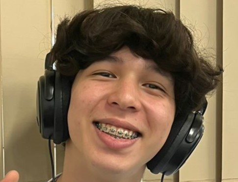

Sobre mim
Meu nome é Fernando e sou uma pessoa curiosa, sempre em busca de aprender coisas novas e crescer tanto na vida pessoal quanto profissional. Gosta de desafios, valoriza boas conexões e está sempre aberta a novas experiências.
Estudante de Desenvolvimento de Sistemas

Meu nome é Fernando e sou uma pessoa curiosa, sempre em busca de aprender coisas novas e crescer tanto na vida pessoal quanto profissional. Gosta de desafios, valoriza boas conexões e está sempre aberta a novas experiências.
Projeto 1 - Site Loja
O projeto consistiu na construção de um site utilizando os conhecimentos adquiridos em aula, com tema livre. Escolhi desenvolver uma loja de roupas inspirada no estilo da Nike, aplicando conceitos de design, navegação e usabilidade para criar uma experiência moderna e atrativa ao usuário.
Projeto 2 - Receita do Ovo
Esse trabalho é um guia ilustrado de culinária que ensina de forma simples e organizada como fritar um ovo. Ele traz a lista de ingredientes e utensílios necessários, um passo a passo claro do preparo e uma imagem demonstrativa do resultado final, tornando o conteúdo didático e acessível até para iniciantes.
Fernando.Onishi@gmail.com - ig onishi_fernando - 11 99999-9999